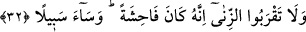

ettiği için büyük bir günahtır.
Bilesin ki bu âyetin başından 39. âyetin sonuna kadar olan on âyette on kınanmış kötü
huyun on iyi huyla değiştirilmesine işâret vardır. Kınanan on hasletin birincisi cimrilik,
ikincisi uzun emeldir. “Geçim endişesi ile çocuklarınızın canına kıymayın.” âyetinde
bu iki haslet kınanmıştır. Çünkü cimrilik ve uzun emel Câhiliyye Araplarını çocuklarını
öldürmeye sevk etmişti. Allah “Biz, onların da sizin de rızkınızı veririz” buyurarak
onlara bu kötü hasletlerini cömertlik ve tevekküle dönüştürmeleri gerektiğini gösterdi.
Anlatıldığına göre Yahyâ b. Zekeriyyâ (a.s.) şeytanla kendi sûretinde karşılaştı ve
ona şöyle dedi:
“–Ey İblis! İnsanlardan sana en sevgili olan kimse ile en çok kızdığın kimsenin kim
olduğunu bana haber ver.” Şeytan:
“–İnsanlardan en çok sevdiğim kimse cimri olan mü’mindir. En çok kızdığım ise
cömert olan fâsıktır” dedi.
Yahyâ (a.s.):
“–Bu nasıl oluyor?” deyince şeytan:
“–Çünkü cimrinin bana cimriliği yeter, cömert fâsıka gelince Allah’ın onun
cömertliğine muttali olmasından ve onu kabul etmesinden korkarım.” dedi. Sonra “Şâyet
sen Yahyâ olmasaydın haber vermezdim.” diyerek dönüp gitti.
Derler ki: Bir kimsenin âilesini zühde zorlaması yakışmaz. Bilakis onları zühde dâvet
eder, icâbet ederlerse ne âlâ. Etmezlerse îtidal sınırını aşmaksızın onlara dünyalıktan
bol bol verip kendi hallerine bırakır. Kendi nefsine de dilediğini yapar.
32. Zinâya yaklaşmayın. Şüphesiz o, bir hayâsızlıktır ve çok kötü bir yoldur.
“Zinâya yaklaşmayın.” Bizzat zinâ yapmak bir tarafa zinânın öncüleri olan öpmek,
göz kırpmak ve şehvetle bakmak gibi kötü fiillere bile yaklaşmayın! “Şüphesiz o,” zinâ
çirkinliği son derecede açık, haddi aşan “bir hayâsızlıktır.” Zinâ, adam öldürmek
gibidir. Çünkü zinâda nesebleri yok etmek vardır. Çünkü nesebi belli olmayan kimse
hükmen ölü gibidir.
“Ve çok kötü bir yoldur.” Yâni, zinâ yolu ne kötüdür. Çünkü zinâ, zinâ edeni
cehenneme sürükler. Bu aynı zamanda neseblerin kesilmesi ve fitnelerin kışkırtılması
için bir yoldur. Bir hadiste “Bir kul zinâ yaptığında ondan îman çıkar, başının
üzerinde bir gölge gibi durur. Zinâ fiilini bitirdiğinde îman ona döner.”[80]
buyrulmaktadır.
Sahabeden birinden rivâyet edildiğine göre o şöyle demiştir: “Zinâdan kaçının! Çünkü
onda altı haslet vardır. Bunlardan üçü dünyada, üçü de âhirettedir. Dünyada olanların
ilki rızkın noksanlaşmasıdır. Yâni zinâ sebebiyle rızkın bereketi gider, hayırdan mahrum